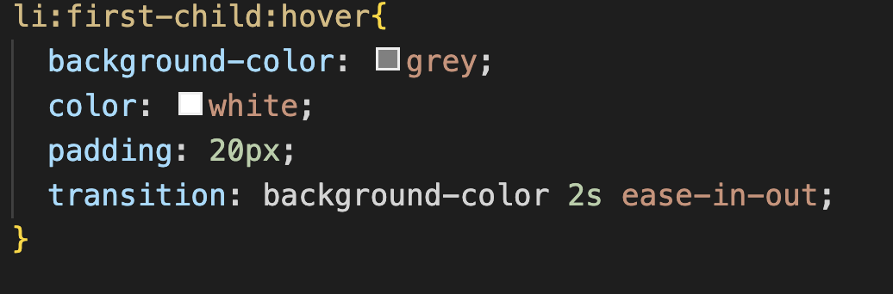
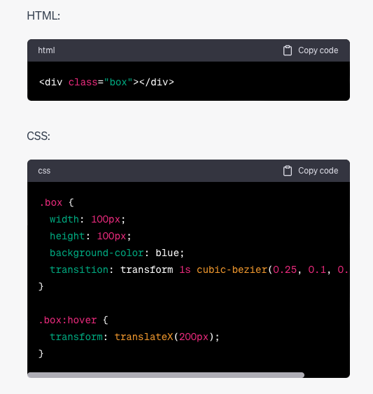
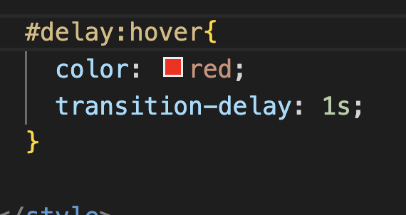

Transitions in CSS allow for smooth animated changes in property values over a specified duration. They provide a way to add visual effects and smooth transitions between different states or styles of an element.
Below are some key aspects of CSS Transitions.
-
transition Property:
It specifies which CSS property should be animated during a transition.
Hover on me!

-
duration: Specifies the length of time that a transition should take place, in seconds (s) or milliseconds (ms).
-
Timing Function: Defines the acceleration curve for the transition, determining how the visual effect of the transition behaves at the start, middle, and end.

-
The linear timing function has a constant animation speed.
-
ease starts slow, accelerates in the middle, and slows down toward the end.
-
ease-in starts slow and accelerates gradually.
-
ease-out starts fast and decelerates smoothly.
-
ease-in-out starts slow, accelerates in the middle, and decelerates toward the end.
-
cubic-bezier allows you to define a custom acceleration curve by specifying the control points.

-
delay: Sets a delay before the transition starts.
